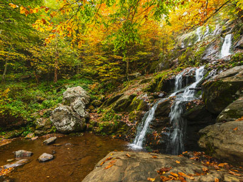
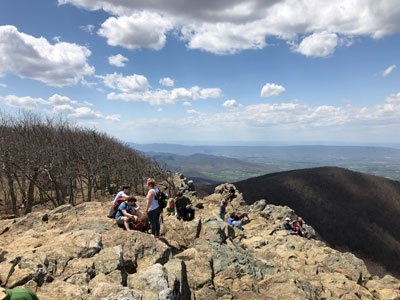
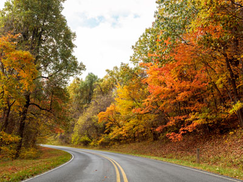
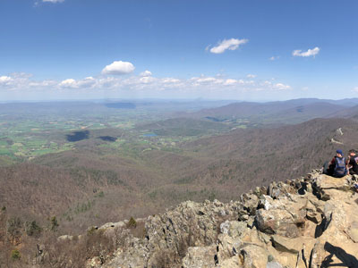
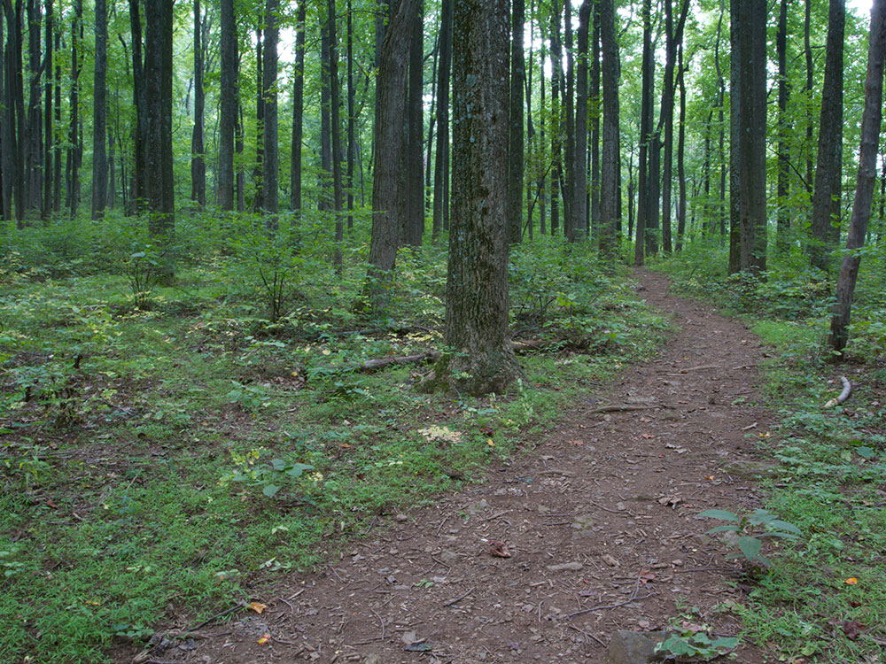
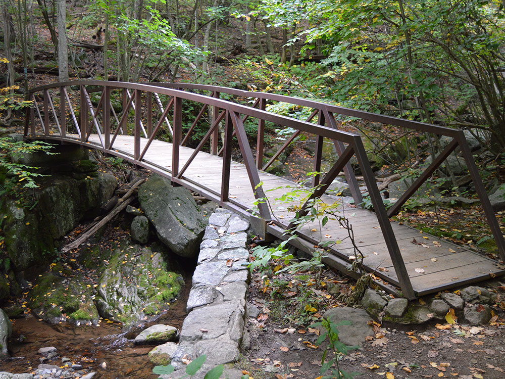
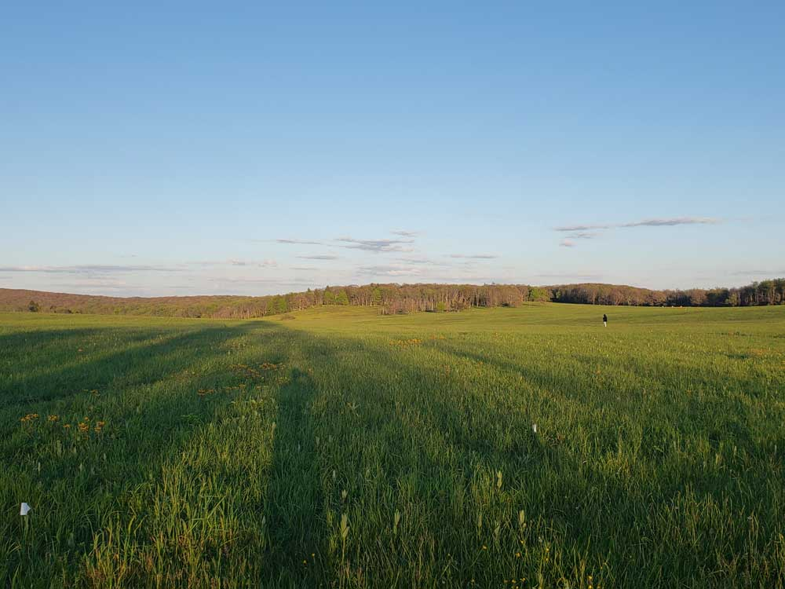
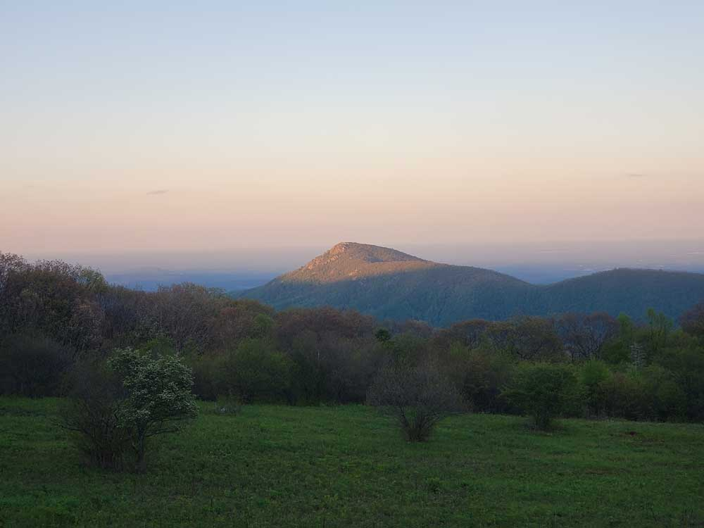
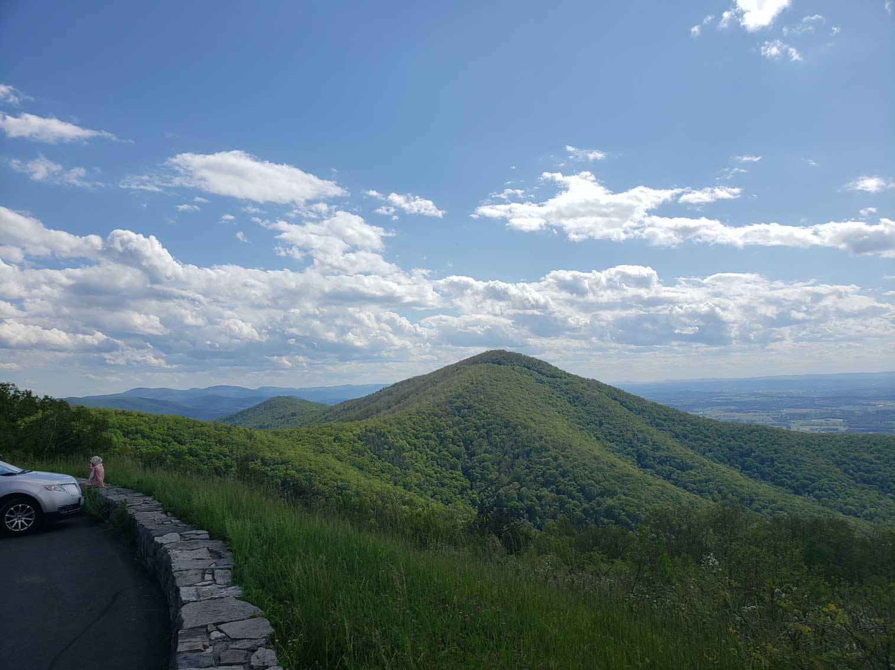

.jpg){kind=link}
National Park encompassing part of the Blue Ridge Mountains in Virginia, with the Shenandoah River and its broad valley to the west, and the rolling hills of the Virginia Piedmont to the east
General Information
Dickey Ridge Park Store and Outdoor Ranger Contact Station: Open Friday - Tuesday, 9am to 5pm
Big Meadows Park Store: Open Thursday to Monday, 9am to 5pm
Big Meadows Outdoor Ranger Contact Station: 9am to 5pm daily
This fee covers unlimited entry for one vehicle and passengers for seven consecutive days, beginning on the day of purchase
Accepts America The Beautiful Pass
Pets are prohibited on the following trails:
Fox Hollow Trail (mile 4.6)
Stony Man Trail (mile 41.7) except for portion that follows the Appalachian Trail
Limberlost Trail (mile 43)
Post Office Junction to Old Rag Shelter
Old Rag Ridge Trail
Old Rag Saddle Trail
Old Rag Access Trail
Ridge Access Trail (Old Rag area)
Dark Hollow Falls Trail (mile 50.7)
Story of the Forest Trail (mile 51)
Bearfence Mountain Trail (mile 56.4)
Frazier Discovery Trail (mile 79.5)
How to Get There
From Washington, DC (71 mi): Follow I-66 W to exit 13 at Happy Creek, then take VA-55 W into Front Royal to the park's Front Royal entrance and the north end of Skyline Drive.
Overview
Shenandoah National Park protects a long, narrow slice of the Blue Ridge Mountains in Virginia, with the Shenandoah Valley to the west and the Piedmont to the east. Its 105-mile Skyline Drive runs along the crest of the ridge with 75 overlooks, and more than 500 miles of trails, including 101 miles of the Appalachian Trail, lead to waterfalls and summits. Nearly 40 percent of the park is designated wilderness, and the highest peak is Hawksbill Mountain at 4,051 feet. The park also holds some of the oldest rocks in Virginia, more than a billion years old.
Created in the 1930s as an East Coast park within reach of Washington, D.C., it was championed by President Herbert Hoover, whose fishing retreat, Rapidan Camp, is inside the park, and President Franklin D. Roosevelt dedicated it in 1936. The Civilian Conservation Corps built much of its road and facilities. Skyline Drive is a National Historic Landmark and a National Scenic Byway. People come for the drive, the views, the waterfalls, the wildflowers in spring, and, above all, the fall color, which is the park's peak season.
Park Sections
The park is organized along Skyline Drive, with mileposts that run from 0 at Front Royal in the north to 105 at Rockfish Gap in the south. The northern district (miles 0 to 31) includes Dickey Ridge Visitor Center and quieter trails. The central district (miles 31 to 65) is the most popular, with Skyland, Big Meadows, Old Rag, Stony Man, and Hawksbill. The southern district (miles 65 to 105) is quieter and has Loft Mountain and Blackrock Summit. Four entrances: Front Royal, Thornton Gap (US-211), Swift Run Gap (US-33), and Rockfish Gap (I-64).
Sightseeing and Exploring the Park
Skyline Drive is the park's main scenic road, a 105-mile route with a speed limit of 35 mph, which takes at least three hours to drive. It has 75 overlooks facing both the valley and the Piedmont, and some of the best are Range View, Stony Man, Hazel Mountain, and the Big Meadows area. Many trails start at pull-offs along the road. Wildlife often appears along the roadside, especially deer and bears. In fall, traffic can be heavy, so start early. Dining and shopping stops are available at wayside facilities at Elkwallow, Skyland, Big Meadows, and Loft Mountain.
Hiking
The park has trails for all levels. Easy walks include the Limberlost Trail (1.3 miles) and the Frazier Discovery Trail (1.3 miles), and Bearfence Mountain (about 1.2 miles) has a short rock scramble with great views. Dark Hollow Falls (1.4 miles) is a popular waterfall hike. Moderate hikes include Stony Man, Hawksbill, Marys Rock, and Blackrock Summit. Old Rag is a strenuous 9-mile loop with a rock scramble and requires a day-use ticket during peak months. The Appalachian Trail runs along the ridge for 101 miles.
Other Activities
Besides hiking and driving, the park offers horseback riding from Skyland stables, bicycling on Skyline Drive, fishing for native brook trout in mountain streams (with a Virginia license), rock climbing, ranger programs, and stargazing, as the park is recognized for its dark skies. Visitors can tour Rapidan Camp, Hoover's retreat, by guided van or hike, and the Byrd Visitor Center has exhibits. Nearby attractions include Luray Caverns, Skyline Caverns, and the historic towns of Front Royal and Sperryville. There are no boat tours or outfitters in the park other than the stables.
Flora and Wildlife
About 95 percent of the park is forested, mostly oak and hickory, with spring wildflowers, mountain laurel in June, and a brilliant show of fall color, usually peaking in mid- to late October. More than 1,400 species of plants grow here. Wildlife includes white-tailed deer, which are common along Skyline Drive, black bears, which are frequently seen, bobcats, wild turkeys, peregrine falcons, and many salamanders. Bears should never be fed or approached. Wildlife viewing is on your own, and early morning and evening are best.
Access
The Front Royal entrance is about 75 miles west of Washington, D.C., a drive of about 1.5 hours via I-66, and Washington Dulles International Airport is about an hour and a half away. Charlottesville is about 30 miles from the Rockfish Gap entrance at the south end, and Harrisonburg is about 25 miles from Swift Run Gap. Most visitors drive, and there is no public transportation into the park. Skyline Drive is the only road through the park, and there are no cross roads, so plan your entrances and exits ahead. Cell service is limited, so download maps before you go.
Seasons
Spring brings wildflowers, waterfalls, and pleasant temperatures. Summer is warm and busy, though cooler than the valleys, and it can be hazy. Fall is the busiest season, with colorful foliage and heavy traffic on weekends. Winter is cold and quiet, and Skyline Drive may close temporarily or in sections during snow and ice. Many facilities, including the lodges, waysides, and campgrounds, close from about late November to March, and some are open only on weekends in spring. Check the National Park Service website for road conditions and facility dates.
Camping and Lodging
Inside the park, lodging includes Skyland Resort (mile 41.7), Big Meadows Lodge (mile 51), and Lewis Mountain Cabins (mile 57.5). Campgrounds include Mathews Arm, Big Meadows, Lewis Mountain, Loft Mountain, and the Dundo Group campground, most open from April to October or November, and reservations are strongly recommended. Backcountry camping requires a permit. Outside the park, nearby towns have many options: Front Royal, Luray (including the Mimslyn Inn), Sperryville, Harrisonburg, Waynesboro, and Charlottesville, about 30 minutes to an hour away, offer hotels, inns, and B&Bs.
Visitor Centers
The park has two main visitor centers. Dickey Ridge Visitor Center at mile 4.6 is near the north entrance and has exhibits and a bookstore. Harry F. Byrd Sr. Visitor Center at mile 51 in Big Meadows is the larger of the two and has exhibits and a film. The Loft Mountain Information Center at mile 79.5 is open seasonally. Rangers at the centers can advise on conditions, trails, and Rapidan Camp tours. Hours vary by season, so check the National Park Service website.
This article uses material from the Wikipedia article "Shenandoah National Park", which is released under the Creative Commons Attribution-Share-Alike License 3.0. Additional information comes from the National Park Service Shenandoah National Park website.
Featured Trails
Bearfence Trail
Short but adventurous loop trail featuring a hands-on rock scramble leading to one of the few 360-degree panoramic viewpoints in the park.
Short but adventurous loop trail featuring a hands-on rock scramble leading to one of the few 360-degree panoramic viewpoints in the park.
Blackrock Summit Trail
Short accessible hike leading to a broad rocky summit with sweeping views across forested ridges and wide valley landscapes.
Short accessible hike leading to a broad rocky summit with sweeping views across forested ridges and wide valley landscapes.

Shenandoah National Park from Virginia, Public domain, via Wikimedia Commons; Image Size Adjusted
.jpg){kind=link}
Dark Hollow Falls
Popular waterfall hike featuring a cascading stream plunging over a series of rocky ledges within a lush forested mountain hollow.
Popular waterfall hike featuring a cascading stream plunging over a series of rocky ledges within a lush forested mountain hollow.
Frazier Discovery Trail
Short loop trail climbing through diverse forest to scenic cliffside viewpoints atop a high ridgeline.
Short loop trail climbing through diverse forest to scenic cliffside viewpoints atop a high ridgeline.

Famartin, CC BY-SA 4.0, via Wikimedia Commons; Image Size Adjusted

Hawksbill Summit
Highest peak in the park featuring a rocky summit with expansive panoramic views across the Blue Ridge Mountains and Shenandoah Valley.
Highest peak in the park featuring a rocky summit with expansive panoramic views across the Blue Ridge Mountains and Shenandoah Valley.
Limberlost Trail
Gentle, fully accessible loop trail winding through quiet forest with interpretive stops and shaded paths ideal for a relaxed nature walk.
Gentle, fully accessible loop trail winding through quiet forest with interpretive stops and shaded paths ideal for a relaxed nature walk.
Marys Rock
1.4 miles loop, 465 feetMountain summit hike leading to exposed rock viewpoints with sweeping vistas over the Shenandoah Valley and surrounding Blue Ridge ridgelines.
-400.jpg)
Shenandoah National Park from Virginia, Public domain, via Wikimedia Commons; Image Size Adjusted
Old Rag
Challenging loop hike featuring steep climbs, exposed rock scrambles, and sweeping summit views from one of the park’s most iconic peaks.
Challenging loop hike featuring steep climbs, exposed rock scrambles, and sweeping summit views from one of the park's most iconic peaks.

Shenandoah National Park from Virginia, Public domain, via Wikimedia Commons; Image Size Adjusted
.jpg){kind=link}
Skyline Drive
1.4 miles loop, 465 feetfeatures several picturesque overlooks as it passes through woodlands of varying ages on Loft Mountain.

Famartin, CC BY-SA 4.0, via Wikimedia Commons; Image Size Adjusted

Stony Man
Short and scenic summit hike leading to wide-open rock viewpoints with sweeping vistas across the Shenandoah Valley and Blue Ridge Mountains.
Short and scenic summit hike leading to wide-open rock viewpoints with sweeping vistas across the Shenandoah Valley and Blue Ridge Mountains.

Shenandoah National Park from Virginia, Public domain, via Wikimedia Commons ; Image Size Adjusted.jpg){kind=link}




